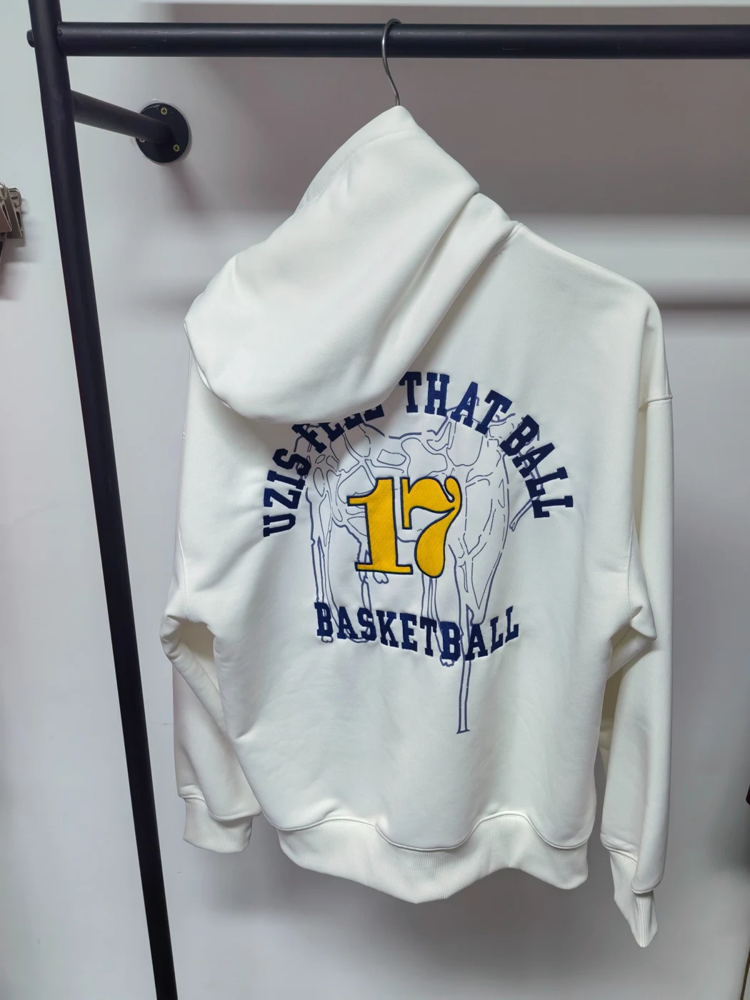
CUSTOMER ODM SAMPLEODM MANUFACTURING EXAMPLE
UZIS
Chinese basketball-oriented apparel brand. An example of Xiang-Kang’s ODM manufacturing work.
Shown: supplied UZIS graphic hoodie reference.SPORT MEETS STREET.
Fresh energy for your next collection.
OEM / ODM apparel for brands, teams and retail.
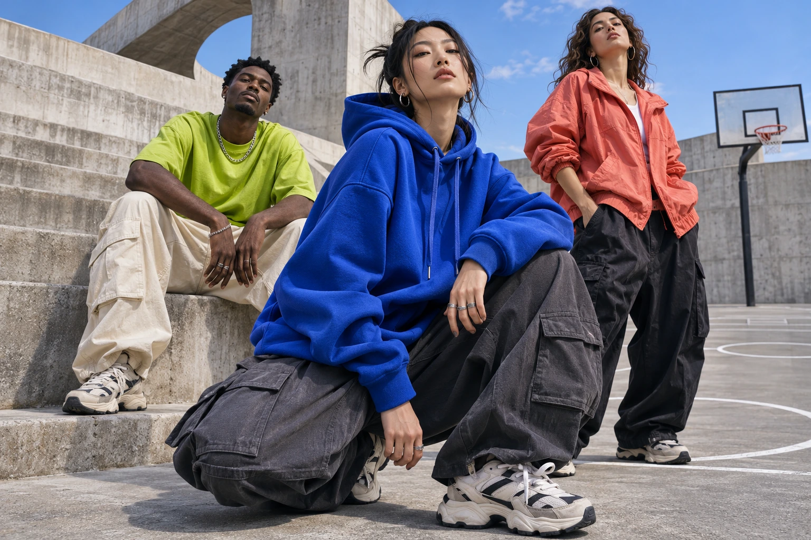
CAMPAIGN CONCEPT01 / THE COLLECTION EDIT
Sixteen starting points for your next range. Explore the silhouette, then open a style for fabric directions, fit, colour palettes and the details to build into your brief.
Original AI-generated design concepts, not physical samples. Each palette offers five proposed colour directions, not stocked or confirmed colourways. Fabric weights, fits and construction below are development targets to discuss, not tested product specifications.
TURN THE ENERGY UP
Electric blue. Acid lime. A flash of coral.
Grounded by ink and soft chalk. A fresh palette to explore, rework and make your own.
02 / INSIDE THE SAMPLE ROOM
Explore the supplied apparel photographs: graphic tees, hooded layers, polos and decorative details. A tangible starting point for the details that matter.
Customer OEM samples and sample-room photographs supplied by Xiang-Kang. Customer designs and marks are shown as manufacturing references, not for reproduction or resale. See Selected Work for project context.
SELECTED ODM & UNIFORM PROJECTS
Selected ODM manufacturing and custom-uniform projects, from basketball-inspired casualwear to team apparel.

CUSTOMER ODM SAMPLEODM MANUFACTURING EXAMPLE
Chinese basketball-oriented apparel brand. An example of Xiang-Kang’s ODM manufacturing work.
Shown: supplied UZIS graphic hoodie reference.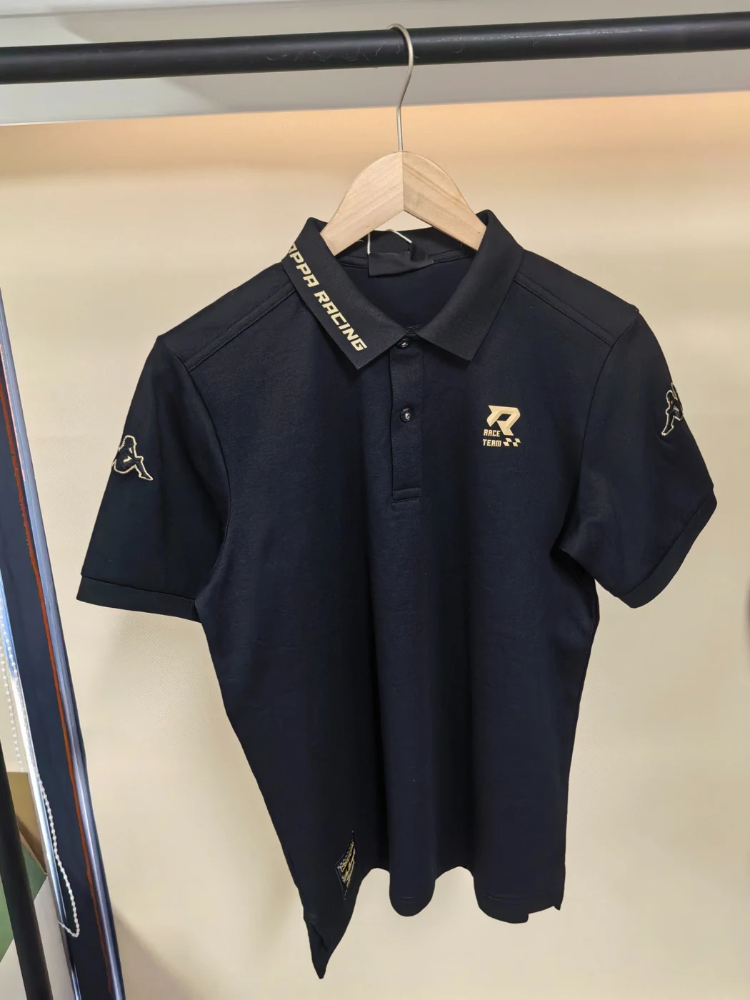
CUSTOMER ODM SAMPLEODM MANUFACTURING EXAMPLE
Sportswear and lifestyle apparel brand. An example of Xiang-Kang’s ODM manufacturing work.
Shown: supplied Kappa polo reference.About the brandCUSTOM-MADE UNIFORM SUPPLY
Xiang-Kang supplies custom-made uniforms for Sports Centre, the Adelaide-based sports and school apparel business.
About Sports CentreXiang-Kang supplies custom-made uniforms for Sturt Basketball Club, publicly known as Sturt Sabres Basketball Club.
About the clubProject information is supplied by Xiang-Kang. Brand names and artwork belong to their respective owners. Examples describe manufacturing and uniform supply, not endorsement or exclusivity.
BUILT AROUND YOUR BUSINESS
OEM and ODM development for uniform shops, sports-apparel customisation suppliers, independent brands and retail buyers. Start with your own specifications or develop a new direction together.
Discuss coordinated polos, tees, hoodies and sportswear for school sports, club sports and university teams. Plan colours, size ranges, authorised crests and repeat-order requirements.
Build a brief around team names, player numbers, original graphics, decoration placement and blank-garment requirements. Confirm artwork rights and decoration suitability before sampling.
Explore active, studio and casualwear capsules with brand-specific fits, fabrics, labels, trims and packaging. Refine your collection through sample review.
Discuss coordinated apparel programmes, target price points, size architecture, packaging, testing and buyer-specific requirements for larger retail channels.
Target (US), Big W and Kmart (Australia) are examples of the retail buyer segment we aim to serve. They are not presented as Xiang-Kang customers, partners or affiliated brands. Buyer approval, compliance and capacity requirements must be reviewed for each programme.
OEM / YOUR SPECIFICATIONS
Bring a tech pack, authorised artwork or approved design. Discuss materials, measurements, construction and finishing against your requirements.
ODM / COLLABORATIVE DEVELOPMENT
Start with a category, customer or collection idea. Explore design, fabric and styling options, then refine and approve a physical sample.
03 / YOUR BRAND, IN DEVELOPMENT
Build a brief around your customer, your collection and your target price. We’ll discuss the route from concept to an approved sample.
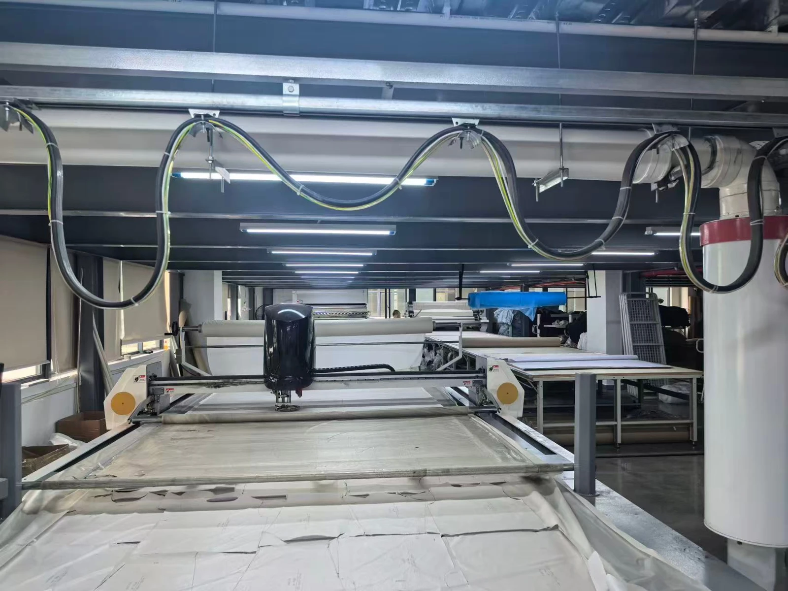
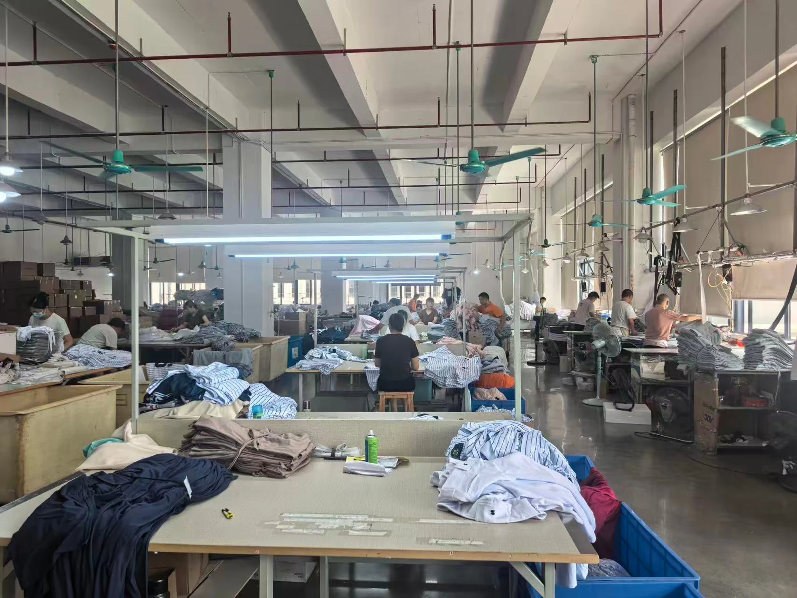
Share sketches, tech packs, target markets and the categories you want to develop.
Discuss composition, fabric weight, stretch, fit, colour and decoration. Any performance requirement needs agreed testing.
Review a physical sample and confirm materials, measurements, construction and costs before production.
Agree order quantities, timelines, packaging and delivery around your approved project.
FOR YOUR DEVELOPMENT BRIEF
Explore nylon, polyester and spandex (elastane) blends. Define support, opacity and movement requirements.
Discuss premium cotton yarns, jersey, fleece and French terry, with a weight and handfeel suited to your range.
Consider labels, trims, prints and embroidery. Availability and technical suitability are confirmed per project.
SUPPLIED CREATIVE DIRECTION
A further set of supplied visuals explores movement-led campaigns and basketball-inspired apparel presentation. These are creative references, separate from physical garment and factory photography.
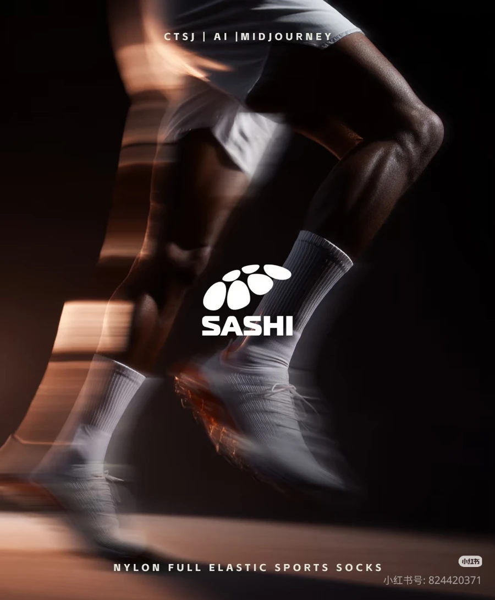
SUPPLIED AI CAMPAIGN REFERENCE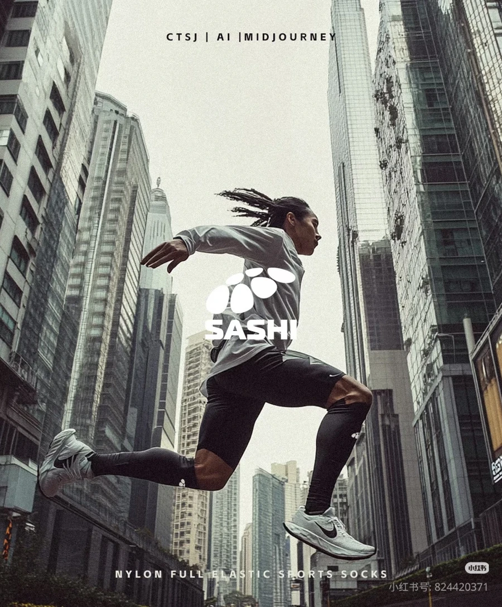
SUPPLIED AI CAMPAIGN REFERENCE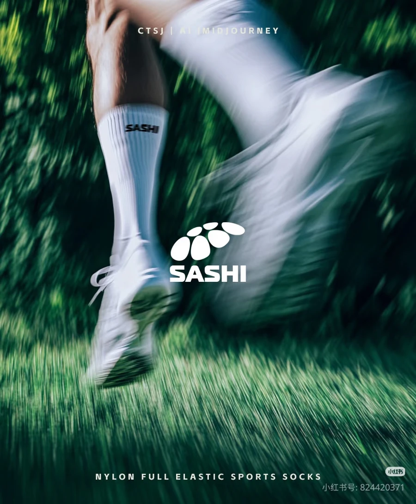
SUPPLIED AI CAMPAIGN REFERENCE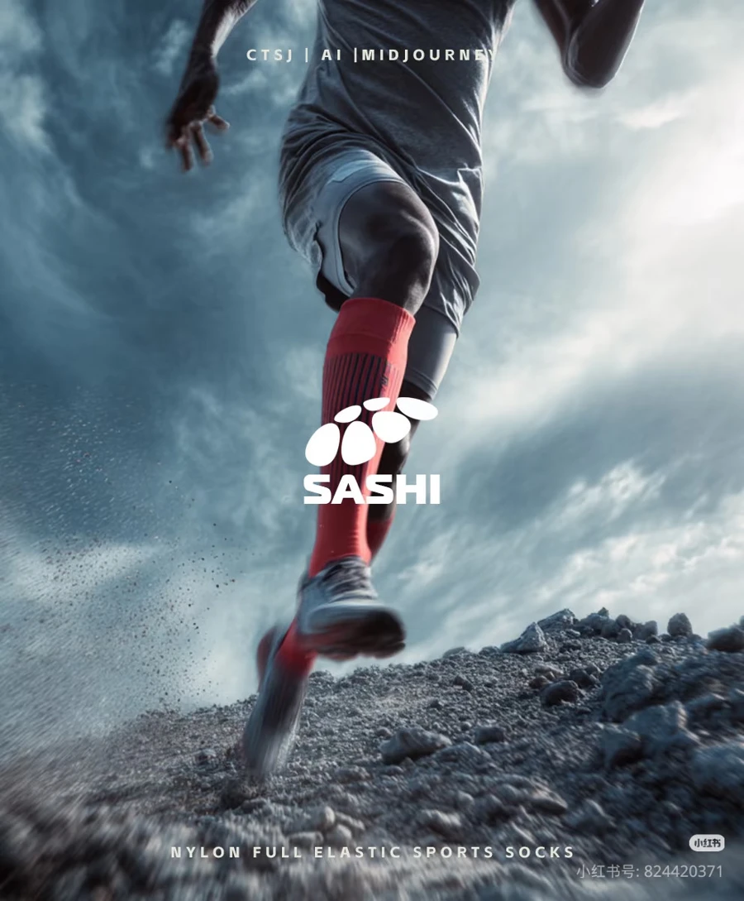
SUPPLIED AI CAMPAIGN REFERENCE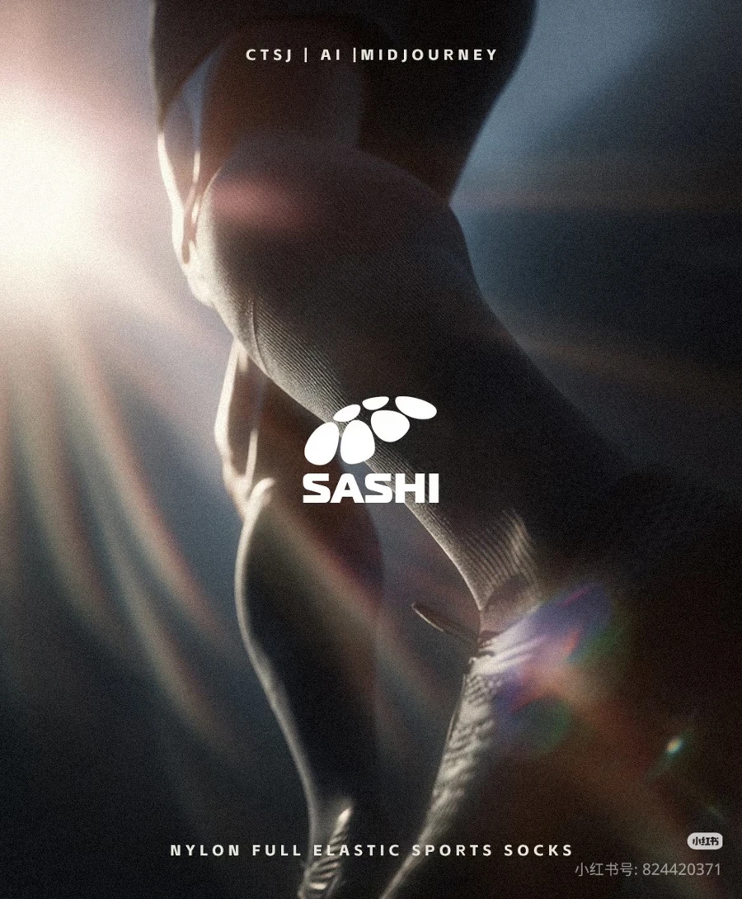
SUPPLIED AI CAMPAIGN REFERENCE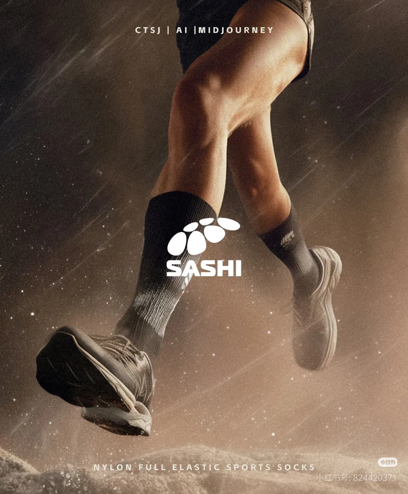
SUPPLIED AI CAMPAIGN REFERENCE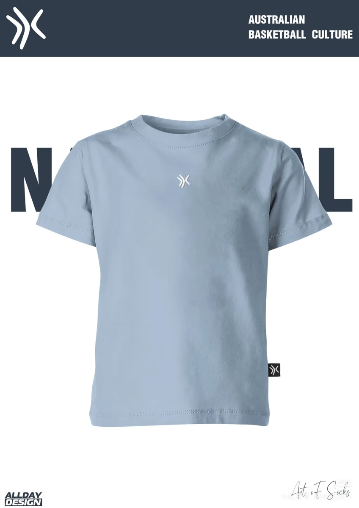
SUPPLIED DESIGN MOCKUP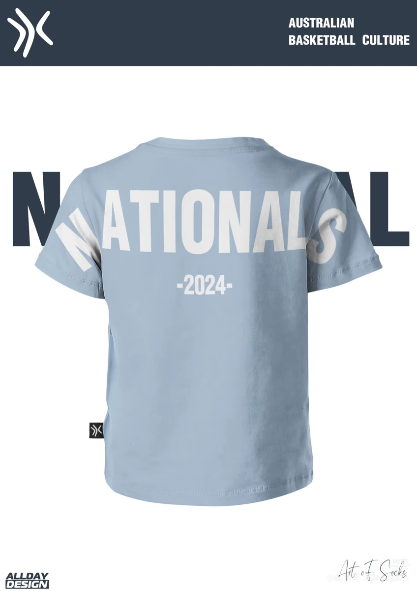
SUPPLIED DESIGN MOCKUPThe six campaign references are visibly marked AI / Midjourney in the supplied artwork. The two tee images are supplied design mockups. Visible marks and artwork remain with their respective owners; no partnership, customer relationship, production claim or permission to reproduce them is implied. These images do not verify fabric composition or performance.
XIANG KANG / 祥康制衣
Founded in Guangdong in 2019, Xiang Kang brings material sourcing, garment development and manufacturing into a clear conversation with your brand.
Our approach starts with your brief: the right fabric and construction, a sample you can review, and production details agreed before an order moves forward.
FOUNDER & CEO
Textiles, fabrics and apparel experience since the 1990s, with practical knowledge of materials, production and supplier relationships.
CO-FOUNDER / GLOBAL OPERATIONS
Australia-raised, supporting international buyer relationships, commercial coordination and global operations.
LET’S GET MOVING
Have a fully formed tech pack or just a spark of an idea? Tell us what you’re building.
besttom23@gmail.com +86 135 2293 9232A FEW USEFUL DETAILS
They are original AI-generated concepts for discussion. A physical sample, specification, pricing and feasibility review are required before any order.
Your product categories, references or tech pack, preferred materials, quantity, target price and desired timeline. It is fine to start with an early idea.
Quantities and timelines depend on the style, materials, customisation and order plan. Ask for a project-specific quote and schedule.